Assignment
Group Assignment ( Mechanical Design )
Design a machine (mechanism+automation), including the end effector build the passive parts and operate it manually
Document the group project and your individual contribution
Group Assignment ( Machine Design )
Automate your machine
Document the group project and your individual contribution.
Students
First Questions
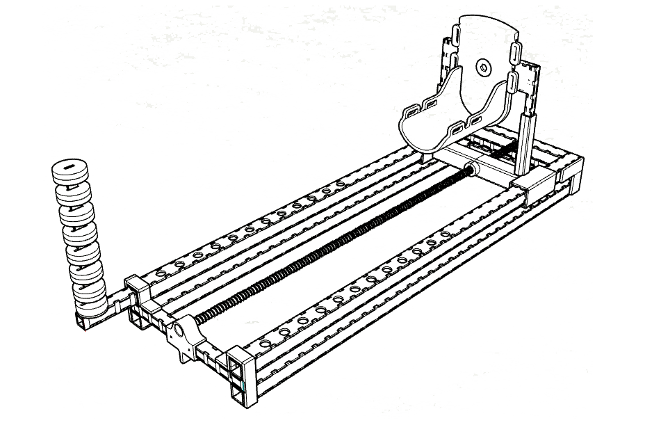
What is it?
Orthopedic Traction Machine
It's a redesign of an Orthopedic operating table, a common surgery object used in total hip replacements, osteosynthesis (A surgical procedure that stabilizes and joins the ends of fractured (broken) bones by mechanical devices such as metal plates, pins, rods, wires), traumatology, and general spinal surgeries.
This external device of lower limb traction keeps the leg of the patients (most commonly old people from 60-90 years old) straight so doctors can proceed with the surgery.
The idea of the project was given by the student Ivan Callupe, a Medical Doctor that works on the traumatology area and is in charge of many hip osteosynthesis surgeries, he got inspired by this low cost prototype.
We decided to automatize the prototype and redesign it based on material availability and costs we got in the fablab.
How it is used?
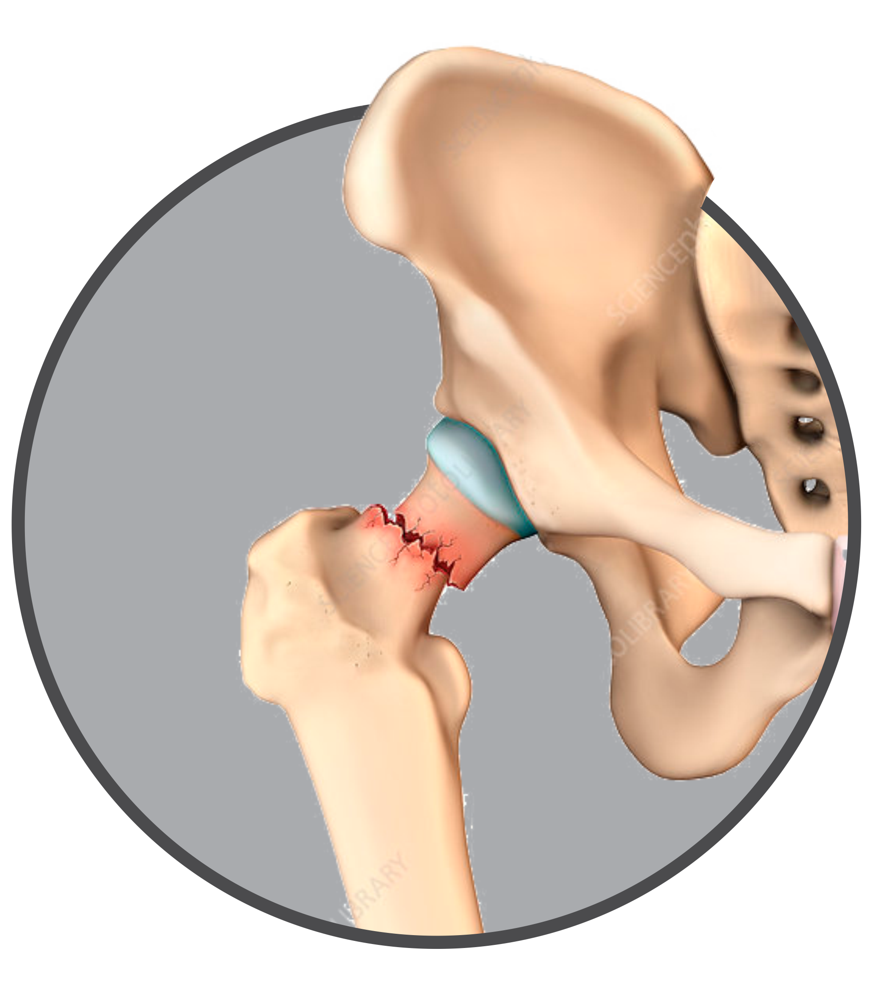
The hip fractures occur in the región of the proximal femur. This type of fracture is common in the elderly (over 65 years old).
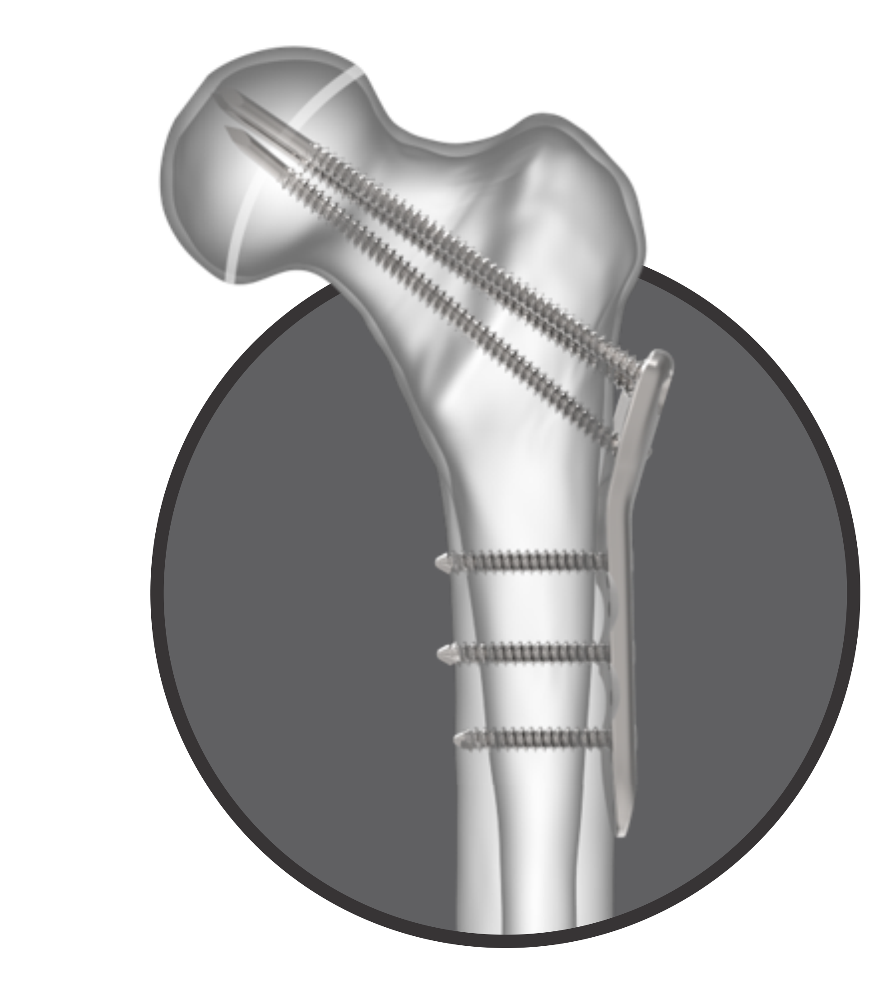
The treatment for this type of fractures is surgical; where plates and screws or intramedullary devices are used.This type of surgery needs devices to perform the procedure, the main one is "the orthopedic traction table".
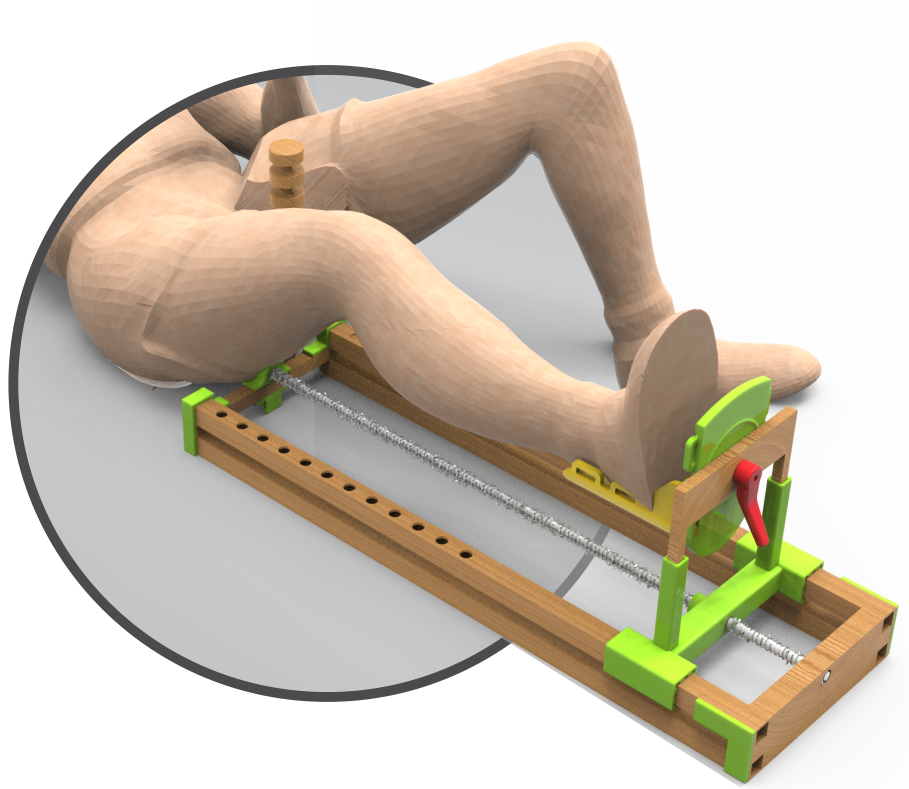
The principle of operation is to perform traction on the leg, this allows the fracture to be placed in the correct position and to be able to perform the surgery.
What are the current machines used?
Nowadays, the current devices used are high quality automatic orthopedic traction tables , the average price for one of these tables goes from $ 2500 to $ 8000. Not many Peruvian hospitals can afford to pay that amount of money, that's why they used they're personal to hold the persons leg during the whole procedure.
The Brazilian Prototype that we exposed before could be a low-cost option, but it is still being a mechanical prototype controlled manually, in which case, precision depends on the human factor.
This project took the best of each device, the automatic control and the low cost mixed with digital fabrication technologies and that's how we define the way this will take in this long journey.
Workflow
To start with this weeks group assignment we identify four main activities: Redesign, assembly, programming and finally testing the machine. We distribute the work according to each one's specialty. We also divided the work in two parts: hardware and software. All the physical things like assembly and electronics production are the hardware, on the other hand, the programming and interface development to control and manipulate the machine are the software.
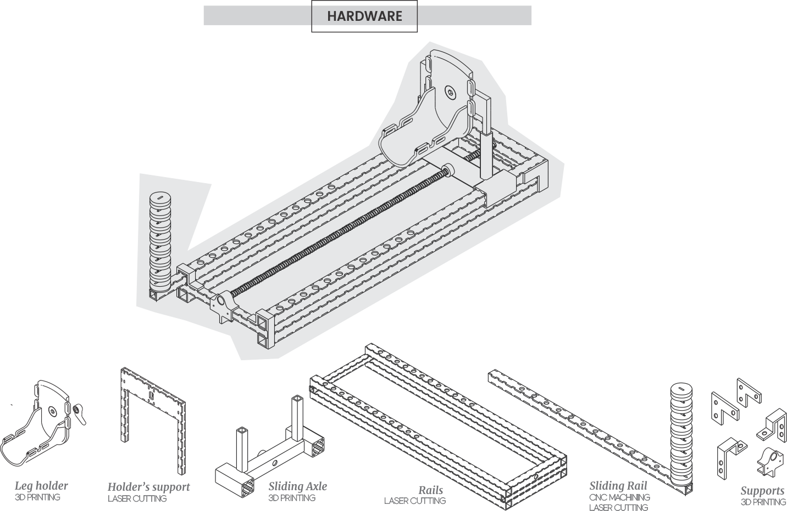
We decided to use Laser cutting, 3d printing and CNC machining to build the machine. You can see in the drawing the type of technology used in each case on mechanical design. The stucture and big parts are made of MDF of 3 mm using laser cutting and the tiny and more complex parts are made of 3D printing and cnc machining. Besides that, we used screws and an endless rod to assembly all the parts.

Due to the fact that we divided the modeling work between us, we decided to use Rhinoceros and Inventor.
Modeling on Rhino.
You can download all the 3D files: Here
Modeling on Inventor.
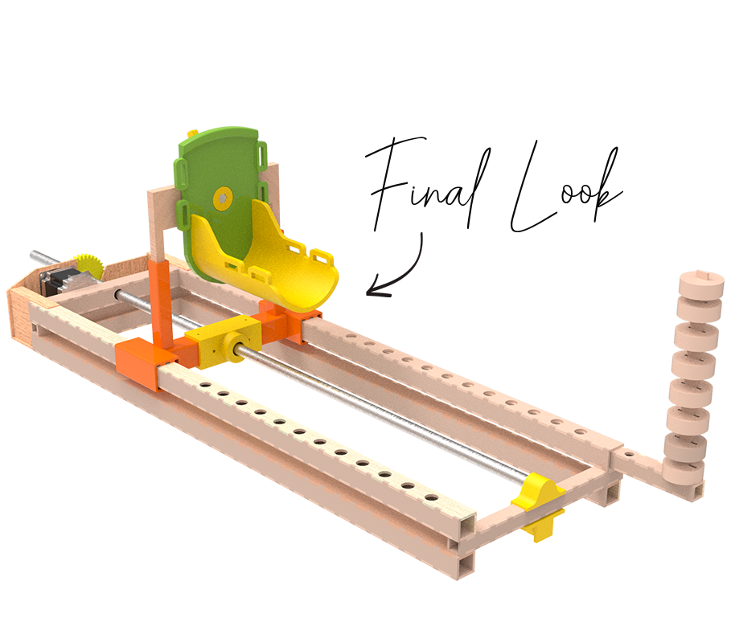
Here's a quick review of the technologies used, this is just a summary, if you wanna know the constructive details about each parts visit the pages of Silvia Lugo and Carlos Nina.
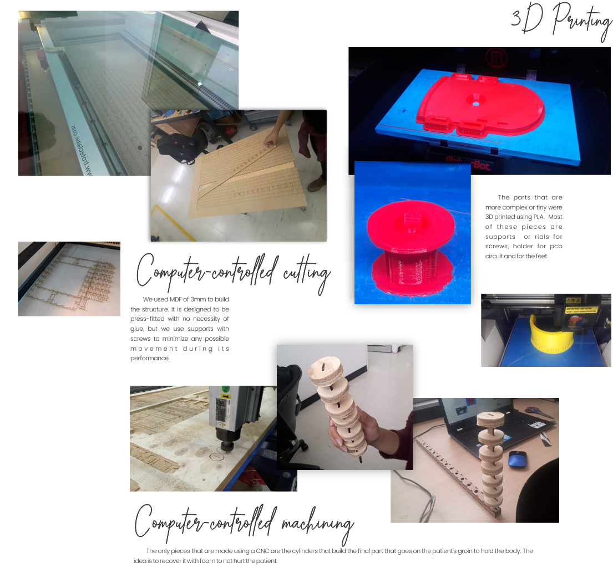
Starting from the rails.
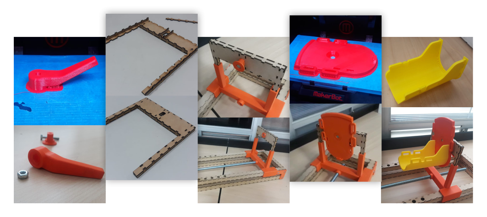1.1 Electronics of Orthopaedic traction machine
1.1.1 Fabduino Desing
Using an Atmega328l microcontroller, A circuit for the programming and control of multiple inputs and outputs was designed.
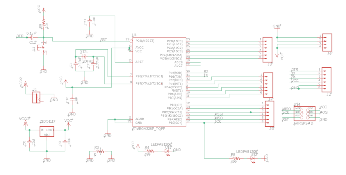Schematic of the FabDuino.
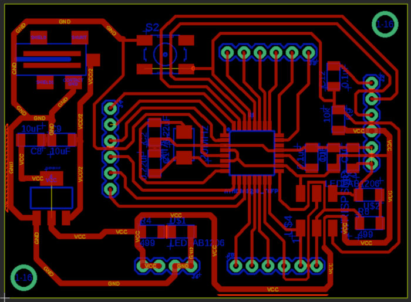Board of the FabDuino.
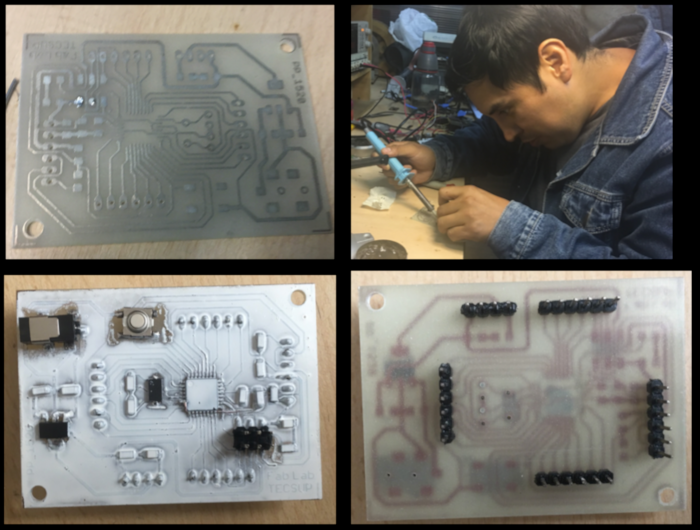Download files: Fabduino
1.1.2 Board of gyroscope
To control the inclination, we use an arduino gyroscope module (MPU6050l ). This will be controlled by an Attiny45 microcontroller.
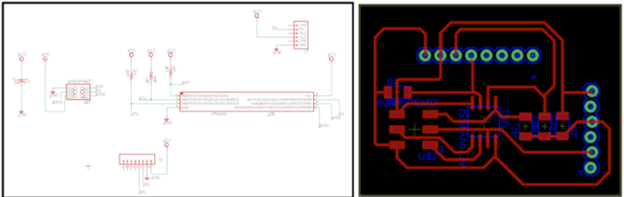Schematic of the Gyroscope.
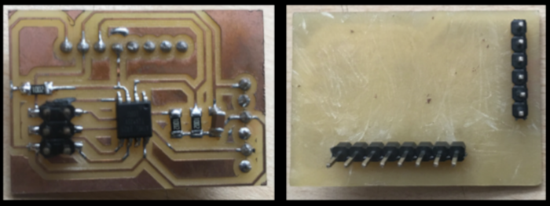Board of the Gyroscope.
Download files: Gyroscope
1.1.3 GRBL Shield for Fabduino
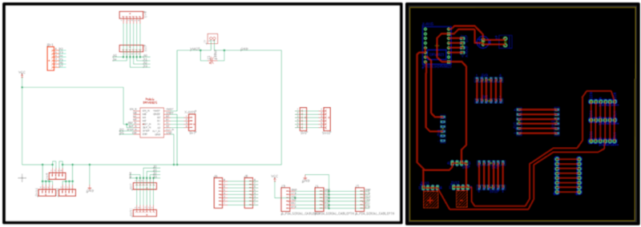Schematic GRBL Shield.
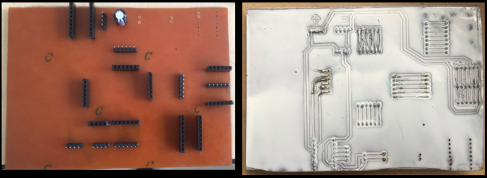Board GRBL Shield.
Download files: GRBL Shield
1.1.4 Arduino Code
Arduino Code of Fabduino.
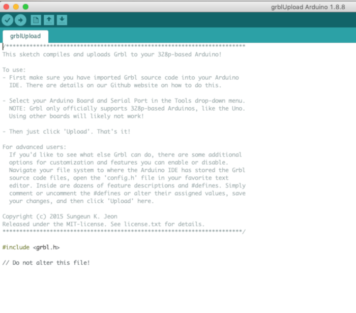Download files:Arduino Code
Arduino Code of Gyroscope.
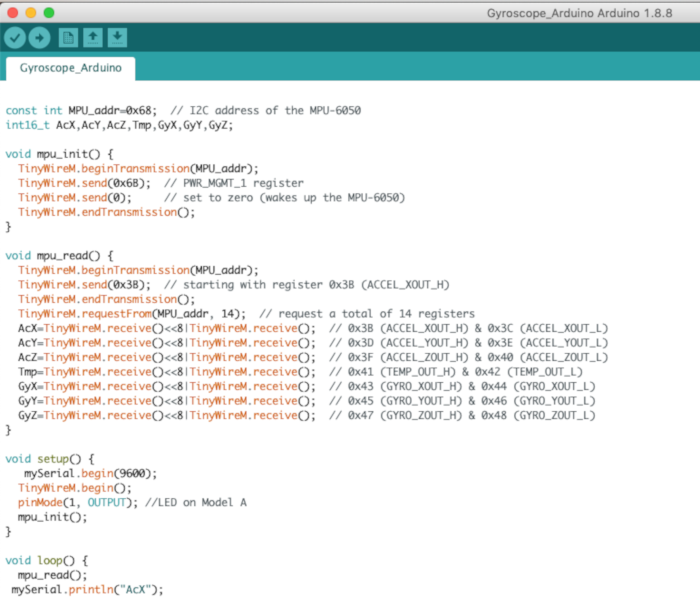Download files:Arduino Code
1.1.5 Structure of the electronic design
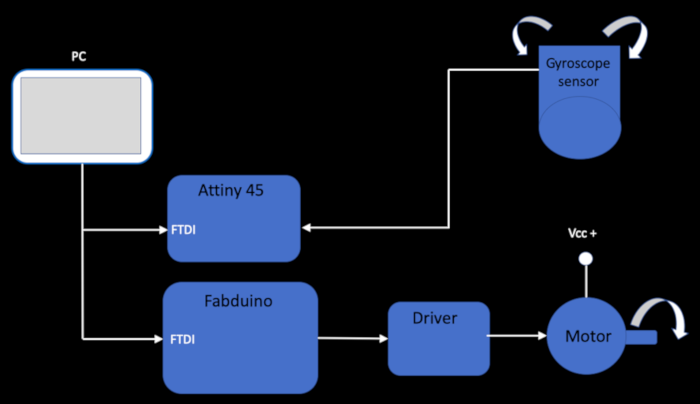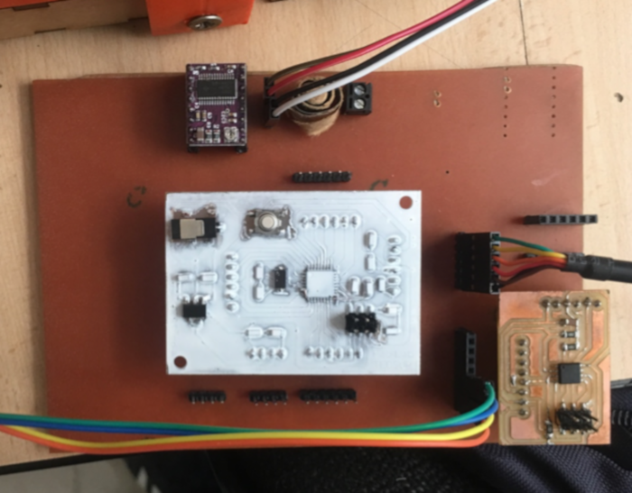
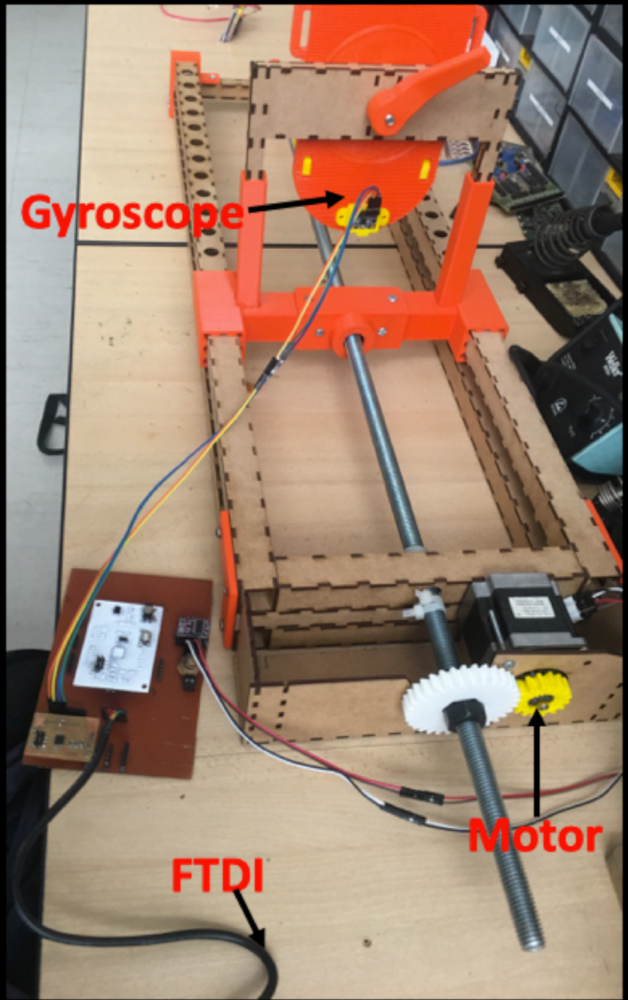
Machine Design FabLab TECSUP - 2019 from Ivan Callupe on Vimeo.